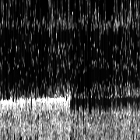

{kind=link}

Since the ZX Spectrum, I've been hooked to digital graphics, 2D and 3D software, procedural algorithms and techniques. Whenever I have the chance I love to experiment and make prototypes, algorithms or tools (I love making tools for graphics!).
This is a compendium of random tests and experiments I made along the years (some very old), and will try to keep updated.
When Radiohead released their LIDAR-based videoclip for the song "House of Cards", they also released some point cloud data so everybody could play with them (link). I converted the CSV files to OBJ and played with them in Houdini.
Generating a procedural city out of an image with the street layout.
The authors of a psychophysiological experiment at the local University asked me to make artistic renderings of a sample of their data, four recordings of the electrical activity of a single neuron.
Houdini proved to be the best tool to manage this task. The first image corresponds to the raw data normalized and rendered in grayscale.



Little tests programming for the Nintendo DS (roms: nds-test.nds, nds-fire.nds).
Direct implementation in C++ of Jos Stam's "Real-Time Fluid Dynamics for Games" famous paper. Using the fantastic TinyPTC library to draw pixels on Windows.
Same as above, but this time in Javascript and trying to get a nice thing to present in the great js1k.com contest. I didn't present this one, since I didn't manage to shrink it to 1024 Bytes without destroying it too much, but had a lot of fun implementing the algorithm.
(I didn't find the code yet, just these two screenshots..)
Implementation in Flash of a boids system with different behaviours.
Basic raytracer done in C++.
Willing to know how far I was from a professional raytracer, I made a MEL script in Maya to export to my scene format and be able to compare both renderers:
Years later I did another raytracer in Python:
Synthesis of cellular textures, based in Voronoi diagrams. Coloring in Photoshop.
My humble incursion into raymarching Signed Distance Functions. Link.

{kind=link}